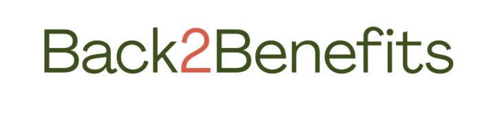
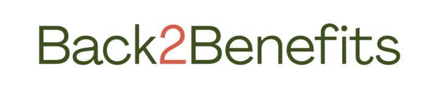
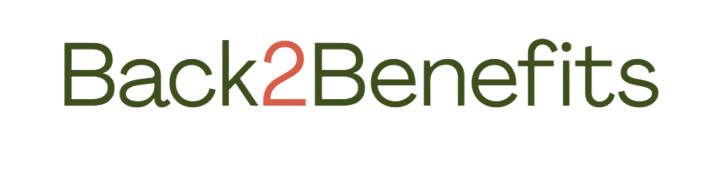
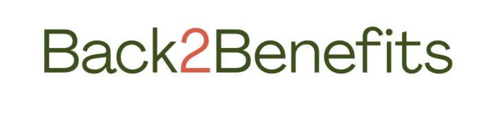

Nourish Up is the child of two non-profit organizations, Friendship Trays and Loaves & Fishes. With the joined power Nourish Up provides groceries for citizens in need through Mecklenburg County. They offer grocery home delivery and have a Meals on Wheels program which can bring the groceries directly to you.
Heart & Hands provides shelf stable and perishable groceries, personal care products, baby needs including formula and diapers, and pet supplies. They also offer curbside and delivery services, both by appointment only.
4040 Chesapeake Drive, Charlotte, NC 28216
☎️ Contact number : 980-292-0357
The Bulb is a non-profit mobile farmers market that brings fresh, nutritious product to underserved communities in Charlotte. By feeding people, supporting local farmers and reducing food waste, they are building a stronger and more connnected food system.
932 Seigle Ave, Charlotte, NC 28205
☎️ Contact email : info@thebulb
gallery.org
UNC Charlotte provides a welcoming and inclusive space, offering access to free food and essential resources to help you succeed. Their pantry offers a variety of nutritious non-perishable and fresh foods on a weekly basis to currently registered members of the UNC Charlotte community.
1224 John Kirk Drive, Charlotte, NC 28223
☎️ Contact number : 704-687-7304
Through their partnership with Charlotte Mecklenburg Library, Hope Street Food Pantry brings fresh, nutritious groceries directly to neighborhoods via mobile pantry distributions at local library branches. They're fostering dignity, convenience, and care for our neighbors where they live.
4100 Johnston Oehler Road, Charlotte, NC 28269
☎️ Contact number : 704-584-9073